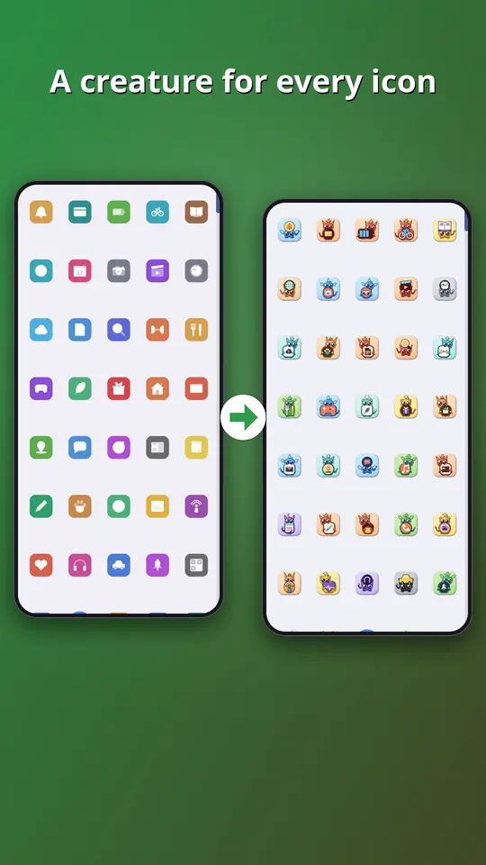

Somewhere between a sticker album and a creature collection lives Critter Pals. Instead of drawing a symbol and stopping there, we gave each one a small monster to wear it or hold it.
A leaf frog hugging your camera
A leaf frog hugs the camera, a spark bat flaps off with your mail, a cloud puff snoozes on your weather. Each creature is invented for this pack and looks like no existing game or franchise. Big eyes, rosy cheeks, a crest and a tail tip change with the element, so you can tell a flame creature from a frost one at a glance.

Ten elements instead of ten colours
Colour in this pack is a creature type. Tide, petal, sunny, sprout, ember, dusk, frosty, pebble, dune and puff each have their own palette, and an app gets the critter whose element sits nearest to the app's own colour. One dark coal critter looks after the black and charcoal apps. Every icon sits on a soft plate in the tint of its element, with a ring of dots, an element pattern or little sparkles, and a dark outline keeps every creature readable at launcher size.
What is inside
- 2,900+ icons in one style, in ten element colours: tide, petal, sunny, sprout, ember, dusk, frosty, pebble, dune and puff, plus a dark coal critter.
- A fallback tile for apps that have no icon of their own yet, a plain element tile, on launchers that let an icon pack supply one, so the grid has no gaps.
- 12 matching wallpapers, made to go with the icons. Set one for the home screen, the lock screen or both from the Wallpapers tab.
- Dark and light mode, with a toggle in the app or following your phone, and search across the whole set.
- An icon request screen. Tap Send and the list of apps you see, plus an email if you type one, goes straight to the developer. That is the only time the app goes online.
- No ads, no analytics and no subscription. It is a one-time purchase of EUR 1.99 on Google Play.
All the symbols are generic. They are drawn by our own tools, and none of them copies a company logo, so no app is promised an exact match. Apps get a symbol that suits what they do, in a colour close to their own.
Twelve wallpapers to match
An icon pack looks best on a wallpaper that belongs to it, so Critter Pals comes with twelve. They share the colours and the mood of the icons, and you can set any of them from the app without installing anything else.
How to use it
- Install a launcher that supports icon packs, such as Nova Launcher, Lawnchair, Niagara, Smart Launcher, Apex Launcher or ADW Launcher. Your current one may already.
- Open Critter Pals and go to the Apply tab. Pick your launcher for a one-tap apply, or open the launcher settings and choose Critter Pals as the icon pack.
- Later, after the pack has been updated, tap Refresh icons in the app to apply the new set again. If the launcher still shows old icons, restart it.
On a Samsung phone? Samsung's own launcher, One UI Home, does not support icon packs, so install one of the launchers above first and set it as your home app. The app has a short guide that walks you through it.
Take a look
You can read more on the Critter Pals: Monster Icons page or go straight to Critter Pals on Google Play. If an icon you need is missing, send us a request from the app and we will see what we can do.
More icon packs: Kawaii Friends: Cute Icons and Die-cut Stickers: Vinyl Icons.